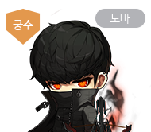

메이플스토리 6차 스킬 코어 3차 적용 (카인·배틀메이지·메카닉·호영)
정식 적용 완료
메이플스토리 세 번째 6차 스킬 코어가 어제(7월 23일) 카인·배틀메이지·메카닉·호영을 포함한 전 직업에 정식 적용되면서, 6월 예고 당시 비어 있던 직업별 스킬명이 전부 공개됐습니다.

6월 13일 '오버드라이브' 쇼케이스에서 예고됐던 세 번째 6차 스킬 코어가 어제 정식 적용됐습니다.
이미지: 메이플스토리 공식
최종 업데이트: 2026.07.24
메이플스토리 세 번째 6차 스킬 코어는 6월 13일 예고, 7월 9일·16일 두 차례 테스트월드를 거쳐 어제(7월 23일) 본서버에 정식 적용됐습니다. 쇼케이스에서 처음 나온 이야기가 두 번의 테스트월드를 거치는 동안 큰 틀은 그대로 유지된 채 본서버까지 올라온 셈인데요. 지난 예고 글에서 비어 있던 직업별 스킬명이 이번 정식 적용으로 전부 채워졌습니다.
이번 세 번째 스킬 코어는 오리진·어센트처럼 전 직업이 똑같이 받는 공통 스킬이 아니라, 직업마다 서로 다른 스킬을 하나씩 받는 방식으로 설계됐습니다. 6월 쇼케이스에서 나온 설명을 정리하면, 딜링 사이클을 기준으로 극딜 비중이 높은 직업에는 짧은 쿨타임의 평딜 강화 스킬을, 평딜 비중이 높은 직업에는 긴 쿨타임의 극딜기를, 이미 색이 뚜렷한 직업에는 그 색을 더 살리는 스킬을 얹는 세 방향으로 나눠 설계했다고 합니다. 전투력 상승 폭 자체는 전 직업이 비슷하게 맞춰졌다는 설명도 함께 나왔었죠.
카인·배틀메이지·메카닉·호영이 이 세 방향 중 정확히 어디에 속하는지는 공식적으로 콕 집어 설명되지는 않았습니다. 다만 호영은 원래 극딜 비중이 높은 직업으로 평가받는 경우가 많아서, 이번 스킬도 그 성향을 더 짙게 만드는 쪽에 가깝지 않겠냐는 시선이 있는 정도입니다. 확정된 설명은 아니라서 참고만 하시면 됩니다.
직업 공통이 아니라 직업별로 다른 스킬을 준다는 이 설계 방향은, 정식 적용 전 예고 단계에서 이미 한 번 정리했습니다 → 메이플스토리 6차 스킬 코어 3번째 업데이트 7/23 예고

세 번째 스킬 코어도 이 'HEXA 매트릭스' 화면의 스킬 코어 칸에 자리 하나가 새로 생기는 방식으로 들어왔습니다.
이미지: 메이플스토리 공식 가이드
카인이 받은 세 번째 6차 스킬 코어는 하나의 스킬이 [발현]과 [처형] 두 형태로 나뉘는 독특한 구성입니다. [발현] 스트라이크 임팩트는 화살 안에 쌓여 있던 악의가 통제를 벗어나면서 그 자리에 마룡이 실체로 나타나는 연출이 붙은 스킬이고, [처형] 팬텀 레퀴엠은 두 자루 칼로 전방을 몰아치듯 베어낸 다음 마지막에 죽음 자체를 방출해 앞에 있는 적을 전부 처형하는 스킬입니다.
같은 세 번째 스킬 코어라도 배틀메이지·메카닉·호영은 스킬 하나씩만 받은 반면, 카인만 유일하게 두 형태가 한 세트로 묶여 있다는 점이 눈에 띕니다. 하나의 스킬을 발현과 처형, 두 단계로 나눠 받은 직업은 이번 세 번째 스킬 코어 전체를 통틀어 카인이 유일합니다.

카인은 이번 스킬 코어에서 [발현]·[처형] 두 형태를 함께 받은 유일한 직업입니다.
이미지: 메이플스토리 공식 직업소개
배틀메이지가 받은 신규 스킬은 암흑의 기운이 짙게 밴 낫을 크게 휘두르는 '모티스 엣지'입니다. 패치노트에 실린 설명은 이 정도로 짧지만, 스킬 성격 자체는 한 방을 크게 터뜨리는 극딜기 쪽에 가까워 보입니다.
재사용 대기시간이 꽤 긴 편이라는 이야기가 유저들 사이에서 나오는데, 공식 발표 수치가 아니라 참고 정도로만 봐 주시면 됩니다. 배틀메이지는 원래 딜 사이클이 긴 직업 축에 들지는 않는 편이라, 이번 스킬로 순간 화력을 한 번 더 얹어주는 그림이 될 걸로 보입니다.

배틀메이지의 신규 스킬 '모티스 엣지'는 극딜기에 가까운 성격으로 보입니다.
이미지: 메이플스토리 공식 직업소개
메카닉이 받은 신규 스킬 '버스터 스테이션'은 미사일 발사 거점을 그 자리에 설치해 그 위로 폭격을 쏟아붓는 설치형 스킬입니다. 사거리가 얼마나 되는지, 몬스터를 다시 추적하는 기능이 있는지 같은 세부 동작은 패치노트 텍스트에 나와 있지 않습니다.
메카닉은 기체를 활용한 설치·소환형 스킬이 많은 직업이라, 이번 스킬도 그 결에서 크게 벗어나지는 않는 모습입니다.
메카닉의 신규 스킬 '버스터 스테이션'은 미사일 거점을 설치하는 방식입니다.
이미지: 메이플스토리 공식 직업소개
호영이 받은 신규 스킬 '선기: 사흉해방 도철'은 봉인돼 있던 도철을 풀어내 함께 전장으로 밀고 들어가는 스킬입니다. 도철은 호영 스토리에 등장하는 '그란디스 사흉' 중 하나로, 원래도 호영의 파트너격으로 다뤄지던 캐릭터입니다.
이번 스킬은 그 도철을 잠깐이 아니라 아예 전투 전면에 끌어들이는 연출이라, 스토리를 따라오신 분들이라면 반가울 만한 구성입니다.
호영의 신규 스킬은 파트너 캐릭터 '도철'을 직접 전장으로 끌어들이는 연출입니다.
이미지: 메이플스토리 공식 직업소개
"네 직업 모두 다른 스킬을 받았지만, 방향은 각자의 강점을 더 살리는 쪽으로 모였습니다."
새 스킬 코어를 30레벨까지 올리려면 솔 에르다 117개와 솔 에르다 조각 3,442개가 필요합니다.
| 항목 | 내용 |
|---|---|
| 30레벨까지 필요 재화 | 솔 에르다 117개 · 솔 에르다 조각 3,442개 |
| 평균 데미지 상승폭 | 약 2.5~3% 수준 |
재화·데미지 수치는 인벤 보도(2026.07.24 확인) 기준입니다.
숫자만 보면 크지 않아 보일 수 있는데, 직업에 따라 상승폭 체감이 다르고 심지어 딜 사이클 자체가 바뀌는 직업도 있다는 게 보도의 요지입니다. 재화 자체는 기존 6차 스킬을 키우던 흐름과 동일해서, 오리진·어센트 올리던 방식 그대로 30레벨까지 밀어붙이시면 됩니다.
Q. 세 번째 6차 스킬 코어, 지금 바로 받을 수 있나요?
네. 7월 23일부터 이미 정식 적용됐기 때문에, 지금 인게임에 접속하면 바로 확인하고 스킬 포인트를 투자할 수 있습니다.
Q. 정확한 데미지%나 쿨타임은 어디서 확인하나요?
공식 패치노트 텍스트에는 세부 수치가 나와 있지 않습니다. 정확한 값은 인게임 스킬 정보(툴팁)에서 직접 확인하시는 게 가장 정확합니다.
6월 예고 때만 해도 빈칸이었던 네 직업의 스킬명이 이제 전부 채워졌습니다. 함께 들어온 7월 23일 업데이트 내용은 다음 글에서 이어서 정리해보겠습니다.